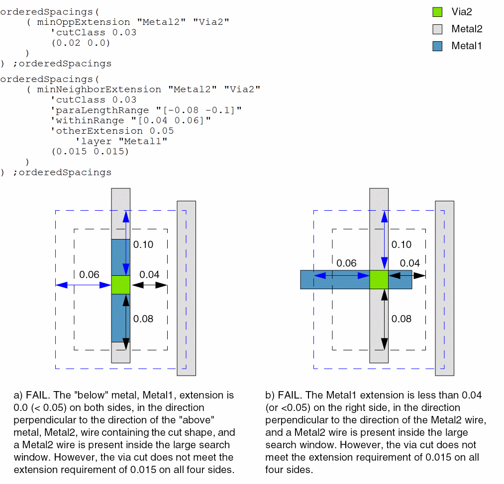
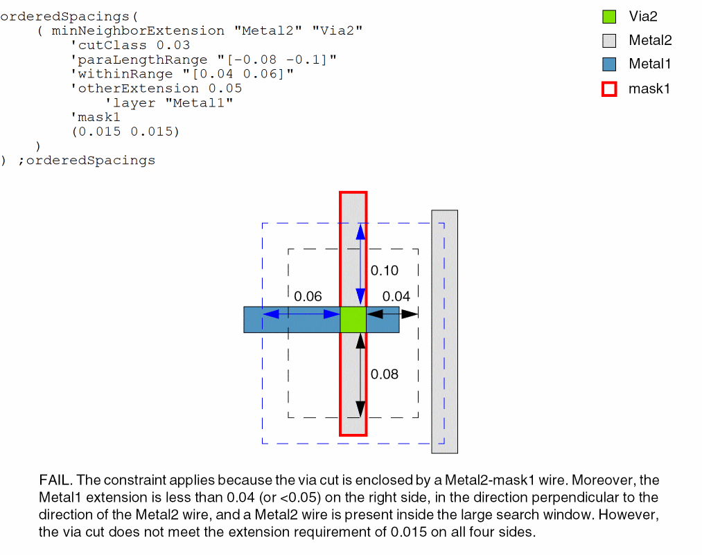

minNeighborExtension
orderedSpacings( ( minNeighborExtensiontx_metalLayertx_cutLayer'cutClass {f_width| (f_width f_length) |t_name} 'paraLengthRangeg_paraLengthRange'withinRangeg_withinRange['widthf_wireWidth] ['otherExtensionf_otherExtension['layertx_otherMetalLayer] ['dualExtensionf_ext1f_ext2] ] ['mask1 | 'mask2 | 'mask3 | 'mask4] (f_ext f_oppExt) )
) ;orderedSpacings
(Virtuoso Advanced Node for Layout Standard) Specifies the minimum extension of a metal shape past a cut shape if the distance between the cut shape and a neighboring wire falls in withinRange and the parallel run length between them falls in paraLengthRange. You can specify both a lower and an upper bound for withinRange and paraLengthRange. Only one such neighbor must exist when only the lower bound for withinRange and paraLengthRange is specified.
Additionally, for the constraint to apply, the neighboring wire must have an edge in the preferred routing direction facing the cut shape and this neighboring wire edge must not have a parallel run length greater than or equal to zero with the cut shape edge orthogonal to it.
The constraint specifies a pair of extension values—of which one applies to one set of opposite sides/edges of the cut shape and the other applies to the other set of opposite sides/edges of the cut shape. For example, if the first value is used to evaluate the extensions in the horizontal direction, the second value is used to evaluate the extensions in the vertical direction.
Optionally, the constraint applies only if the width of the metal shape (the shape drawn on metalLayer) enclosing the cut shape is less than wireWidth.
Values
Parameters
|
The cut class to which the constraint applies, specified by width, by width and length, or by name (as defined in a cutClasses constraint). |
|
|
The lower and, optionally, the upper bound for the parallel run length between the cut shape and the neighboring wire. When only the lower bound is specified: The constraint applies if the parallel run length between the cut and the neighboring wire is greater than or equal to the lower bound. When both lower and upper bounds are specified:
The upper bound for
'withinRange must be greater than the lower bound. The upper bound for 'paraLengthRange must be less than the lower bound.
Type: Floating-point values specifying a |
|
|
The lower and, optionally, the upper bound for the distance between the cut and the neighboring wire. When only the lower bound is specified: The constraint applies if the distance between the cut shape and the neighboring wire is less than the lower bound. When both lower and upper bounds are specified:
The upper bound for
'withinRange must be greater than the lower bound. The upper bound for 'paraLengthRange must be less than the lower bound.
Type: Floating-point values specifying a |
|
|
The constraint applies only if the width of the metal shape (the shape drawn on metalLayer) enclosing the cut shape is less than this value. |
|
|
The constraint applies only if the extension of the "below" metal shape is less than this value on either side of the cut shape in a direction perpendicular to the direction of the "above" metal shape containing the cut shape.
You can specify a metal layer other than the default "below" metal layer by using the |
|
|
The constraint does not apply if the extension of otherMetalLayer shape past the cut shape: |
|
|
(Virtuoso Advanced Node for Layout Only) The constraint applies only if the cut shape is enclosed by a shape on the specified mask on the metal layer on which the constraint is specified. |
|
Examples
- Example 1: minNeighborExtension with cutClass, paraLengthRange, withinRange, and width
- Example 2: minNeighborExtension with cutClass, paraLengthRange, and withinRange
- Example 3: minNeighborExtension with cutClass, paraLengthRange, withinRange, otherExtension, and layer
- Example 4: minNeighborExtension with cutClass, paraLengthRange, withinRange, otherExtension, layer, and mask1
Example 1: minNeighborExtension with cutClass, paraLengthRange, withinRange, and width
The extensions of a Metal2 shape on all sides of a Via2 cut shape with dimensions 0.03x0.03 must be at least 0.09 if a neighboring wire is present at a distance less than 0.08 from the cut shape and has parallel run length greater than or equal to -0.11 with the cut shape.
Example 2: minNeighborExtension with cutClass, paraLengthRange, and withinRange
The extensions of a Metal2 shape on all sides of a Via2 cut shape with dimensions 0.03x0.03 must be at least 0.015 if a neighboring wire is present:
- On one side of the cut shape at a distance less than 0.04 from the cut shape and has parallel run length greater than or equal to -0.08 with the cut shape, that is, inside the small search window.
- On one or both sides of the cut shape at a distance greater than or equal to the lower bound (0.04) and less than the upper bound (0.06), with parallel run length less than or equal to the lower bound (-0.08) and greater than the upper bound (-0.1), that is, inside the outer search window.
Because upper bounds are defined for parallel run length and distance (-0.1 and 0.06, respectively), the constraint does not apply if a neighboring wire is present on both sides of the cut shape inside the small search window.
Example 3: minNeighborExtension with cutClass, paraLengthRange, withinRange, otherExtension, and layer
The extensions of a Metal2 shape on all sides of a Via2 cut shape with dimensions 0.03x0.03 must be at least 0.015 if all of the following conditions are met:
- The extension of the "below" metal (Metal1) shape is less than 0.05 on either side of the cut shape in a direction perpendicular to the direction of the "above" metal (Metal2) shape containing the cut shape.
-
A neighboring wire is present:
- On one side of the cut shape at a distance less than 0.04 from the cut shape and has parallel run length greater than or equal to -0.08 with the cut shape, that is, inside the small search window.
-
On one or both sides of the cut shape at a distance greater than or equal to the lower bound (0.04) and less than the upper bound (0.06), with parallel run length less than or equal to the lower bound (-0.08) and greater than the upper bound (-0.1), that is, inside the outer search window.

Example 4: minNeighborExtension with cutClass, paraLengthRange, withinRange, otherExtension, layer, and mask1
The extensions of a Metal2 shape on all sides of a Via2 cut shape with dimensions 0.03x0.03 must be at least 0.015 if all of the following conditions are met:
- The extension of the "below" metal (Metal1) shape is less than 0.05 on either side of the cut shape in a direction perpendicular to the direction of the "above" metal (Metal2) shape containing the cut shape.
-
A neighboring wire is present:
- On one side of the cut shape at a distance less than 0.04 from the cut shape and has parallel run length greater than or equal to -0.08 with the cut shape, that is, inside the small search window.
-
On one or both sides of the cut shape at a distance greater than or equal to the lower bound (0.04) and less than the upper bound (0.06), with parallel run length less than or equal to the lower bound (-0.08) and greater than the upper bound (-0.1), that is, inside the outer search window.

Return to top